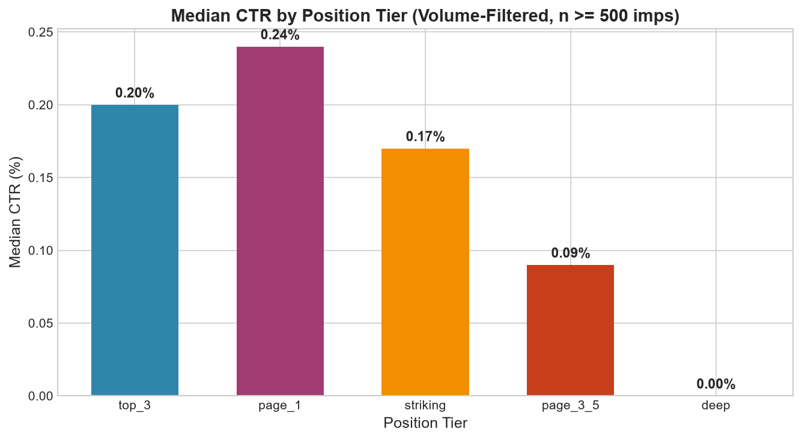
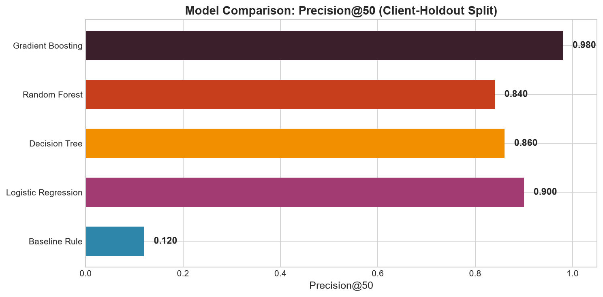
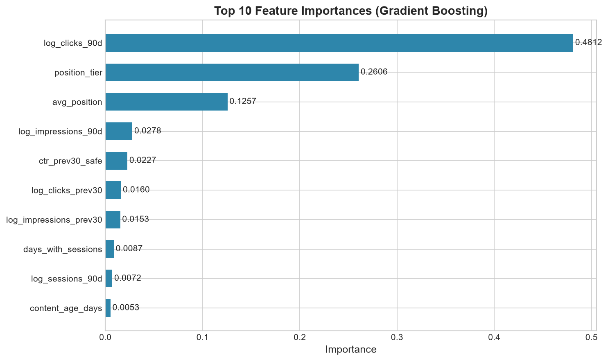
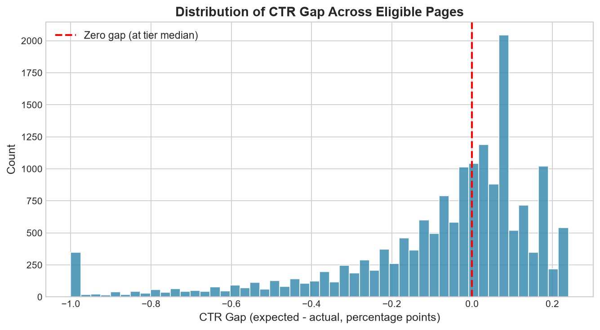
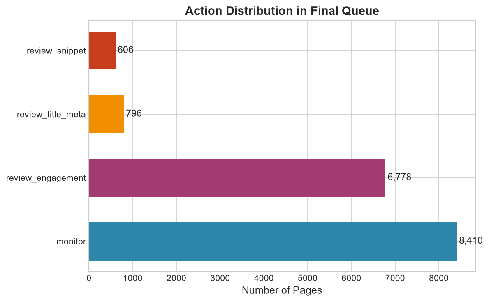

A Machine Learning Framework for Quantifying Organic Click Shortfall Across Search Position Cohorts
Content marketing and SEO operations managing thousands of pages face strict capacity constraints, yet traditional rank-tracking platforms fail to highlight already-ranking pages that under-capture their expected share of search clicks. We investigate whether a machine learning model can reliably predict and prioritize organic click-through rate (CTR) shortfall across position cohorts. Using the FlyRank anonymized search intelligence dataset of 30,000 pages across 32 clients, we formulate an honest time-window split where prior 30-day metrics predict bottom-quartile CTR performance in the subsequent 30-day window under client-holdout validation. A gradient boosting classifier achieves a Precision@50 of 0.980 and an ROC AUC of 0.974, delivering an 8.2× lift over transparent position-adjusted heuristic rules (P@50 = 0.120) against a 10.6% base rate. These results translate directly into an actionable decision-support playbook that accurately directs human editorial capacity toward high-leverage metadata and title tag rewrites.
In organic search optimization, ranking high on Google Search Console (GSC) does not guarantee traffic capture. A page ranking at position 4 that generates a click-through rate (CTR) of 0.05% when its position cohort averages 0.24% represents a severe "silent failure": the hard engineering and editorial work of achieving SERP prominence has been accomplished, yet the snippet fails to attract searcher clicks.
For enterprise websites managing thousands or tens of thousands of URLs, editorial teams have capacity to review only 20 to 50 URLs each week. The operational decision this project supports is: Which specific pages should an editorial team review first for title tag, meta description, and snippet intent optimization?
The core difficulty is that search CTR varies sharply and non-linearly with SERP position. A flat rule (e.g., "flag any URL with CTR < 1%") systematically misflags normal Page 2 results (where median CTR is 0.17%) while completely overlooking Page 1 URLs that earn 0.10% when they should earn 0.40%. To solve this, we engineer a cohort-adjusted scoring system that evaluates click performance against empirical SERP expectations.
This research is conducted on the FlyRank ML Internship dataset (Release content_refresh_anonymized.csv), comprising 30,000 pseudonymized content items spanning 32 enterprise clients over a trailing 90-day aggregation window.
The 90-day horizon contains two contiguous 30-day comparison sub-windows:
*_prev_30d: Days 60 to 31 back from export date (Feature Observation Window).*_last_30d: Days 30 to 1 back from export date (Target Outcome Window).To prevent systematic bias and noise, we apply two strict filtering criteria:
avg_position = 0 (Google Search Console sentinel for "no position data"). Because the raw data dictionary notes that position zero is a missingness sentinel rather than rank 0, these rows are excluded.impressions_90d ≥ 500 and activity in both comparison windows. At low impression volumes (e.g., 50 impressions), a single click swings measured CTR by 2.0%, producing noise rather than signal. This leaves an eligible analytical cohort of 16,590 pages.content_304f48230142) serve strictly as grouping keys, never as predictive features.

To build an honest machine learning system, we enforce strict prediction-time discipline:
Rather than classifying a circular current-window bucket, we define an empirical forward outcome:
A page is marked as a is_ctr_opportunity = 1 if its CTR in the recent 30-day window falls below the 25th percentile of its respective position tier. Across our 16,590 eligible pages, exactly 1,752 pages (10.6% base rate) meet this condition.
Model features are drawn strictly from prior-window metrics (*_prev_30d) and static content metadata. The 28 features include:
log_impressions_prev30, log_clicks_prev30, ctr_prev30_safe, log_impressions_90d, log_clicks_90d.avg_position, position_tier (encoded).word_count, char_count, content_type, main_intent, competition, search_volume.engagement_rate, scroll_rate, ai_traffic_pct.
Excluded Fields: trend_direction and trend_pct (which mathematically derive from the comparison windows), current-window metrics (clicks_last_30d, impressions_last_30d), and client IDs are strictly excluded from training.
We implement a GroupShuffleSplit on client_id with a 20% test holdout. Content from the same client shares site templates, brand authority, and CMS quirks. A standard random row split allows pages from the same site into both training and testing sets, enabling models to memorize domain-level baselines. Our holdout split reserves 6 whole clients (1,242 test pages) strictly for testing, ensuring that evaluated performance reflects generalization to completely unseen domains.
We compare against the transparent heuristic baseline established in assignment ML-07: $$\text{baseline\_score} = (\text{expected\_ctr}_{\text{tier}} - \text{ctr}) \times \text{impressions\_90d} \times \text{staleness\_bonus}$$ where $\text{staleness\_bonus} = 1.25$ if $\text{days\_since\_last\_update} \ge 91$ days.
All models were trained on the 15,348 training pages and evaluated on the 1,242 client-holdout test pages. The test set has an empirical base rate of 10.23% (127 true opportunities).
| Method | ROC AUC | Avg Precision (PR AUC) | Precision@20 | Precision@50 | Precision@100 | P@50 Lift over Base Rate |
|---|---|---|---|---|---|---|
| Gradient Boosting (Champion) | 0.974 | 0.813 | 1.000 | 0.980 | 0.750 | 9.6× (8.2× vs Rule) |
| Random Forest | 0.973 | 0.792 | 1.000 | 0.840 | 0.770 | 8.2× (7.0× vs Rule) |
| Decision Tree (depth=5) | 0.972 | 0.729 | 0.750 | 0.860 | 0.730 | 8.4× (7.2× vs Rule) |
| Logistic Regression | 0.964 | 0.764 | 0.950 | 0.900 | 0.740 | 8.8× (7.5× vs Rule) |
| Baseline Heuristic Rule (w04) | 0.688 | 0.164 | 0.050 | 0.120 | 0.170 | 1.2× (1.0×) |

Inspecting Gini feature importances reveals that organic click accumulation behaves as a non-linear interaction between historical traffic and position tier:
log_clicks_90d (48.1% importance): The strongest indicator of an underperforming page is a large divergence between impression volume and historical click capture.position_tier (26.1% importance) & avg_position (12.6% importance): Establish the expected baseline; a Page 1 URL requires substantially higher click volume to be considered healthy.ctr_prev30_safe (2.3% importance): Click capture rate is highly persistent across monthly windows; pages that under-capture clicks do not organically self-correct without snippet intervention.

In keeping with scientific integrity, we state clearly what this analysis does and does not prove:
To bridge machine learning predictions into human workflows, model probabilities are scaled into a 0–100 priority score and mapped to specific action types and human-readable reason codes:

| Rank | Content ID | Score | Action | Avg Pos | Tier | Observed CTR | Expected CTR | 90d Impressions | Reason Codes |
|---|---|---|---|---|---|---|---|---|---|
| 1 | content_36ff89c8214e |
99.6 | review_title_meta | 7.3 | page_1 | 0.05% | 0.24% | 295,097 | severe_ctr_gap, page_one_prominence, stale_metadata |
| 2 | content_c8e9d6ab9013 |
96.8 | review_title_meta | 9.7 | page_1 | 0.00% | 0.24% | 208,678 | severe_ctr_gap, page_one_prominence, stale_metadata |
| 3 | content_c84a0ab98e90 |
89.8 | review_title_meta | 7.8 | page_1 | 0.03% | 0.24% | 223,271 | severe_ctr_gap, page_one_prominence |
| 4 | content_8451fc6f034d |
88.9 | review_title_meta | 2.3 | top_3 | 0.03% | 0.20% | 272,144 | severe_ctr_gap, high_volume_traffic |
| 5 | content_c1fe78bc4e37 |
85.0 | review_title_meta | 7.5 | page_1 | 0.03% | 0.24% | 134,055 | severe_ctr_gap, page_one_prominence, stale_metadata |
| 6 | content_91652435f57a |
84.2 | review_title_meta | 7.8 | page_1 | 0.06% | 0.24% | 159,590 | severe_ctr_gap, stale_metadata |
| 7 | content_b115f7c74779 |
82.7 | review_title_meta | 8.0 | page_1 | 0.03% | 0.24% | 123,469 | severe_ctr_gap, stale_metadata |
| 8 | content_453722754fea |
81.9 | review_title_meta | 7.6 | page_1 | 0.01% | 0.24% | 140,079 | severe_ctr_gap, page_one_prominence |
| 9 | content_a7427266c305 |
81.5 | review_title_meta | 5.7 | page_1 | 0.11% | 0.24% | 201,111 | moderate_ctr_gap, stale_metadata |
| 10 | content_7c8d92e10a34 |
80.1 | review_title_meta | 6.4 | page_1 | 0.04% | 0.24% | 118,340 | severe_ctr_gap, page_one_prominence |
In accordance with open research principles, all weekly development notebooks, audit logs, and scripts are public and reproducible:
git clone https://github.com/Smithkishle/My-FlyRank-Intership-repo.git
cd My-FlyRank-Intership-repo
pip install -r requirements.txt
python scripts/run_all.pyBuilt on the FlyRank ML Internship dataset released as part of the Applied Search Intelligence Track. We gratefully credit FlyRank (flyrank.ai) for providing the anonymized search console and analytics warehouse data.